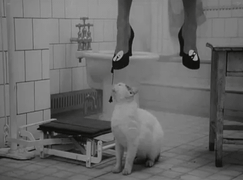
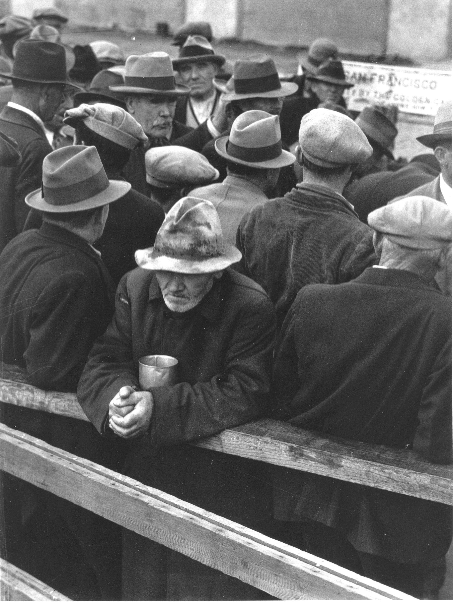
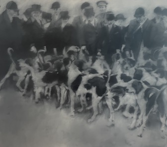
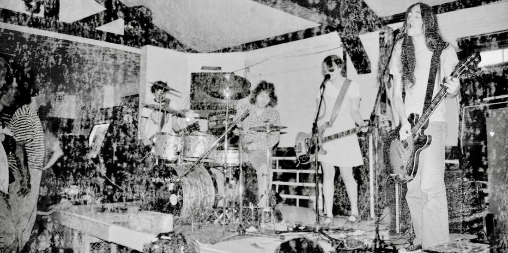
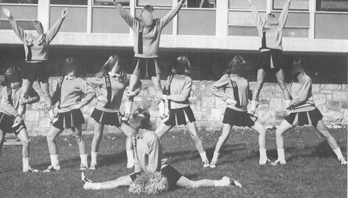
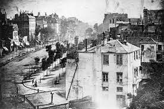
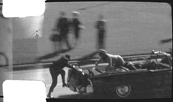
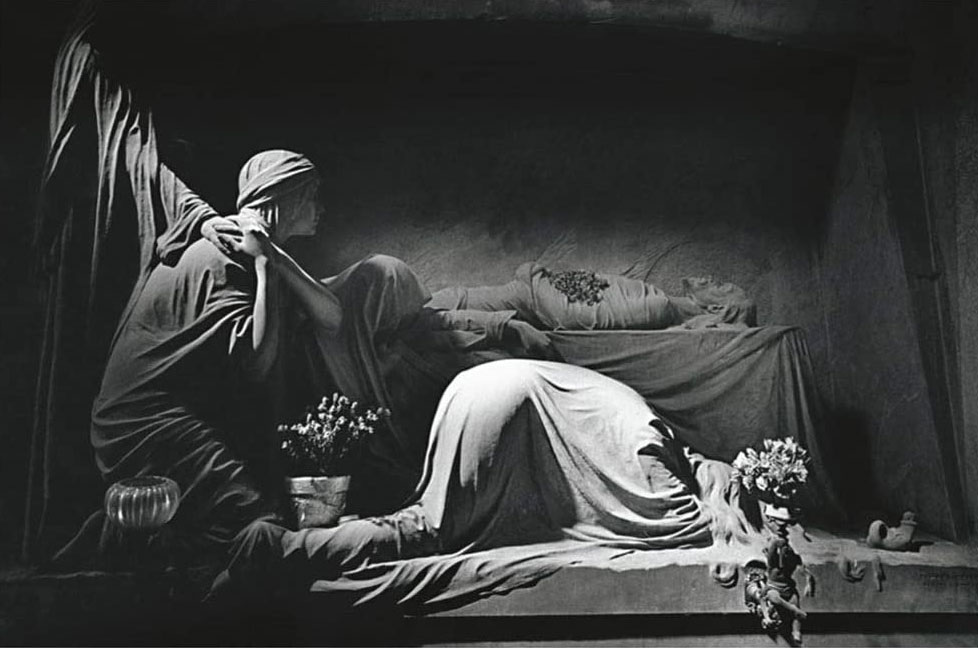

We'd sit next to each other, a vanishing distance apart, and the distance would grow and splinter, and spread throughout the countryside like the arms of a tumor reaching into healthy tissue, undying, leeching, free.
emilia v. // 18
a girl is a gun
welcome to my website ! i hope you like how it looks. hobbies include compsci, tetris, trying to learn more about web design and making something new. i like writing and there is some of my writing featured on this page. key inspirations include the cyclops by odilon redon, david wojnarowicz, jack lance, god, dan barrett, @hostagekiller on twitter, chris sawyer, arnell's manual on the pepsi logo, kevin shields, hyperplexed + kevin powell on youtube, slime from the yard, and the "hypothetical explanations for the paradox" section on the wikipedia article for the fermi paradox.
i dont remember anything from
the ages of 14 to 16
i was nothing and i cobbled together
a vague something
and now i'm picking up shards
pills in the hand like the spoon of a grenade
a little poison to keep the poison away
i beat up a kid when i was 9
i took him by the hand to the base
and i smashed his head against the slide
a mallet against a drum
pink out the wound
plastic against plastic
a brain screaming for a dimension it can't see
trapped in bone
i'd take you up to the city sky and we'd stare at the cameras affixed to skyscrapers wondering who was on the other side. it's just us and the door i locked six times over, again, and again, and again, and i'd take the last train back home and travel back to how it used to be, dead, a cadaver with the heart excised, plates on the desk and hair stuck to the floors. i stopped saying it but there are lines drawn all over me and they haven't gone away. sometimes i wake up and 5 more appear, parallel like lights in a circuit. i am dead and waiting and i die every hour, my head in the canted sights on the third of may, hands up not in surrender but in reflex.
my love is the andromeda galaxy 2.537 million light years away. he's got a single eye that cuts like highbeams through fog and seven arms curled up around his body. i take the telescope out and stare at the flickering of his stars and the floating asteroids on his skin, an eyelid shutting and opening in the night. i stare and i stare and i stare and i fall asleep and collapse on the grass in the yard both eyes closed but still looking. i saw him at first, nebulous, scuffs on a lens, limbs unlike limbs. carried to my bed by five of the seven arms, with constellations drawn in glow-in-the-dark chalk on the ceiling when i was seven, there's pisces, there's sagittarius, and there's you, just on top, drawn in red instead of green. sometimes the dust falls in my mouth and i wake up choking.
it's like there's lights in me and one's switched off and i remember what it felt like when it was on and i don't know how to switch it back on anymore. i can't reach behind my back can you please get it for me. can you please get it for me. can you please get it for me?
IT'S the kind of thing you don't even feel anymore. The skittering a tinnitus like a crackling fireplace. The crunch beneath the feet, shellac and developing nymph wings shattered underneath the heel. He sits up and it's another day. Pick one off the ground and bite. Get used to the taste, it's alright, a little bit stuck beneath the teeth, the crush of black viscera into the throat, tumbling down like an avalanche. Metal for the bed because they don't have the teeth to eat into it. Wood would vanish in a day. Cotton sheets in minutes. It's alright. It's not so bad.
WHAT DOES THIS ALL MEAN TO YOU?
I COULDN'T TELL YOU.
I COULDN'T TELL YOU WHAT IT MEANS.
BUT IT MEANT SOMETHING TO ME.
COMING DOWN NOW.
HOW CAN YOU NOT KNOW?
I CAN'T TIE MY SHOES ANYMORE








